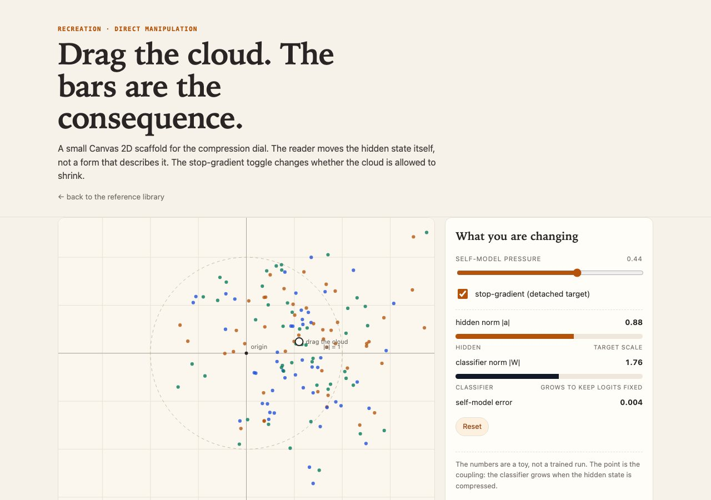
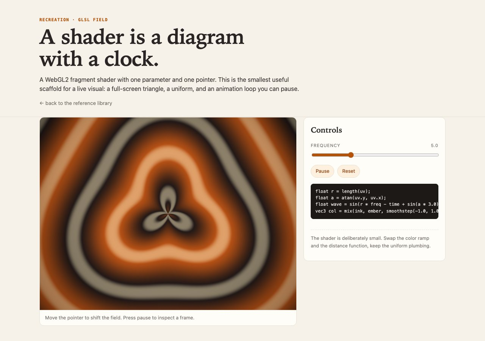
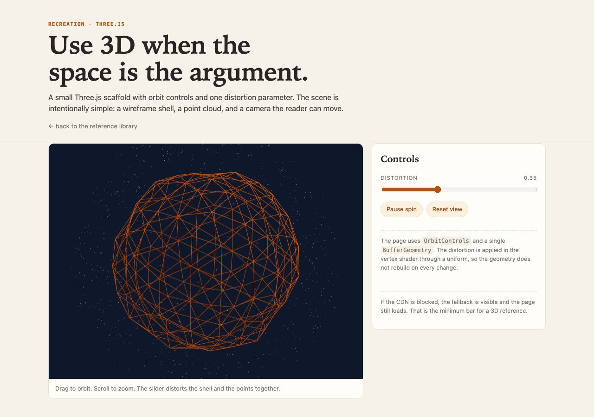
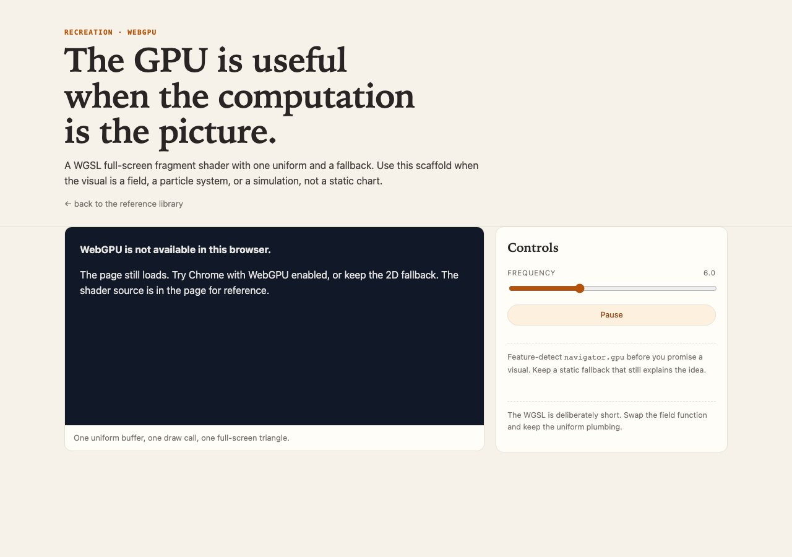

Canvas 2Ddirect manipulation
Drag the cloud
Move the hidden state directly. The bars are derived, not decorative. A stop-gradient toggle changes whether the cloud may shrink.
Each page is a small, dependency-light scaffold. They are not finished essays. They are starting points for the next interaction: drag a cloud, tune a shader, orbit a scene, or fall back cleanly when the GPU is not there.
← back to the reference library
Move the hidden state directly. The bars are derived, not decorative. A stop-gradient toggle changes whether the cloud may shrink.

A full-screen triangle, one uniform, and an animation loop you can pause. The smallest useful live visual.

Orbit controls and one distortion parameter. The geometry stays fixed; the shader moves it.

A WGSL full-screen shader and a deliberate fallback when no adapter exists. The page still explains the idea.